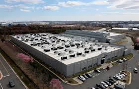
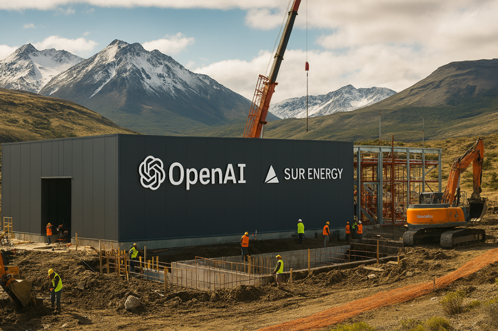

El desarrollo exponencial de la Inteligencia Artificial se traduce en un aumento equivalente de mega data centers (MDTs), instalaciones de almacenamiento y gestión de datos. La presión sobre los bienes comunes, el gran consumo eléctrico e hídrico y otros impactos ocasionan protestas de las comunidades próximas. Como consecuencia hay una tendencia a que la expansión de las instalaciones se produzca hacia los países periféricos, lugares carentes de normativa y gobernantes entreguistas.
El almacenamiento de todos los datos generados por los habitantes del planeta ocasiona: gasto masivo de energía, aumento del efecto invernadero, elevado consumo de agua, alta generación de residuos electrónicos y contaminación por uso de compuestos orgánicos persistentes en equipos de refrigeración.
Siguiendo las tendencias actuales, el consumo eléctrico sería de 945 teravatios-hora en 2030, equivalente al 3% de toda la electricidad que se proyecta consumir en el mundo. Dependiendo de la fuente utilizada para generar esa energía, las emisiones asociadas podrían alcanzar los 400 millones de toneladas de dióxido de carbono, una cifra comparable a las emisiones generadas por el Reino Unido en 2025. Son algunas de las conclusiones del informe "Coste ambiental del uso energético de la IA: huellas de carbono, agua y suelo", publicado por el Instituto de la Universidad de la ONU para el Agua, el Medio Ambiente y la Salud (UNU-INWEH) el 3 de junio de este año.

Además, la infraestructura de IA podría generar hasta 2,5 millones de toneladas de residuos electrónicos al año en 2030, la mayoría procesados o descartados en países de bajos ingresos con escasas salvaguardas, donde a su vez se extraen los minerales críticos. En cuanto al agua, los centros de datos podrían utilizar cerca de 9,3 billones de litros para el año 2030, una cantidad suficiente para cubrir las necesidades de agua de los 8100 millones de habitantes del planeta durante aproximadamente un año y medio. Si bien parte de esa agua regresa a los sistemas naturales, las extracciones masivas pueden afectar acuíferos y ríos, especialmente en regiones áridas o con estrés hídrico.
Según dicho informe, los gastos globales relacionados con la inteligencia artificial superarían en 2026 los US$ 2,5 billones, lo que representa una expansión de 25 veces en menos de una década.
La situación se amplifica cuando la inteligencia artificial se integra a plataformas masivas. El estudio menciona que Google procesa cerca de cinco billones de búsquedas al año. Mientras una búsqueda convencional requiere alrededor de 0,3 vatios-hora, una búsqueda impulsada por IA puede consumir hasta 3 vatios-hora, es decir, diez veces más energía. A su vez un video de alta resolución puede requerir más de 415 vatios-hora, superando ampliamente el consumo necesario para producir cientos de imágenes generadas por IA.
Impactos en el entorno de los MDTs
Los territorios próximos a estas instalaciones comienzan a padecer escases de agua y cortes periódicos de electricidad. A su vez el calor residual influye en los microclimas locales. La contaminación acústica debida al funcionamiento continuo de los ventiladores y generadores de emergencia también afecta la calidad de vida de las comunidades cercanas.
Otro efecto grave es la cantidad de residuos electrónicos altamente peligrosos que genera la rápida obsolescencia del hardware. Así mismo, este material posteriormente descartado requiere una extracción intensiva de minerales raros para reposición.
Se ha registrado también un uso de compuestos químicos persistentes, como sustancias per- y polifluoroalquiladas (PFAS) en componentes de refrigeración y circuitos. La familia de estos productos conocidos como COPs, están regulados y actualizados por el Convenio de Estocolmo desde 2001 al cual Argentina adhirió mediante la Ley Nacional N° 26.011. Son sustancias que se acumulan en el organismo generando desequilibrios endocrinos y según la exposición y la dosis pueden derivar en cáncer.
Resistencia comunitaria en los países desarrollados
Las protestas vecinales y de activistas ambientales contra la instalación de mega data centers se están concentrando principalmente en Estados Unidos y Europa.
Los reclamos se centran en el consumo desmedido de agua para refrigeración, la enorme presión sobre las redes eléctricas locales (que encarece las tarifas de los ciudadanos), el ruido industrial constante y el uso de tierras agrícolas.

En Austria, en pequeñas localidades ribereñas del río Enns, han ocurrido multitudinarias protestas contra los planes de Google de construir un MCDs, debido al temor por la falta de transparencia y el impacto en los ecosistemas fluviales. En Francia ocurren movimientos de oposición en zonas rurales, como el departamento de Indre, en la región de Berry. También hay protestas en Alemania y Reino Unido haciendo hincapié en que estos complejos generan un impacto ambiental severo a cambio de muy pocos puestos de trabajo locales permanentes.
Estados Unidos es el país que concentra la mayor cantidad de MDTCs. Durante el mes de julio los manifestantes realizaron 142 protestas en 42 estados, actividades simultaneas para canalizar la ira por la expansión de la infraestructura de IA. Las protestas fueron coordinadas por HumansFirst, cofundada por una exlíder del Tea Party actual. En Fredericksburg, Virginia, un joven portaba un cartel que decía: "Prosperamos gracias al agua, no a los datos". En Atlanta, un grupo de manifestantes exhibía carteles que decían: "Georgia nunca votó a favor de los centros de datos de IA a hiperescala".
Según una encuesta de Reuters de principios de junio, la oposición a los centros de datos es uno de los temas que unen a los estadounidenses por encima de las diferencias ideológicas, ya que solamente un tercio de la población aprueba estos emprendimientos. Texas, bastión republicano y centro neurálgico para el desarrollo de centros de datos, albergó 18 protestas. Georgia, estado clave en las elecciones, tuvo 11 manifestaciones. California, de mayoría demócrata, tuvo ocho, mientras que Pensilvania, estado indeciso, y Florida e Indiana, estados de tendencia republicana, registraron siete cada uno.
Desplazamientos de los centros de datos de los países imperialistas a la periferia capitalista
Como es habitual, las industrias extractivas ingresan a los países subdesarrollados prometiendo puestos de trabajo. La realidad es que en la etapa de construcción puede requerirse bastante mano de obra, pero a la hora de la operación no se necesita más de algunas decenas de personas. También resulta ser engañoso el consumo de agua que las empresas declaran en sus estudios de impacto, porque no tienen en cuenta que la electricidad, que utilizan, tiene también su huella hídrica.
Actualmente hay más de 34 MDCs en funcionamiento y/o en construcción en Brasil, Chile, México y Colombia.
En Brasil, en la región metropolitana de San Pablo hay centros de datos de 550 MW de carga operativa. Un estudio publicado en Cambridge Prims-Waters estimó un consumo de 16,1 millones de metros cúbicos de agua por año, que equivalen a más de 44.000 metros cúbicos por día. Casi la mitad de esa agua es "invisible": se evapora en los embalses de las hidroeléctricas que generan la electricidad que consumen esos servidores.
Existen conflictos en los territorios. Por ejemplo, la comunidad indígena Anacé, que habita en Ceará, Brasil, resiste la instalación de un data center vinculado a TikTok que ocuparía una superficie equivalente a doce canchas de fútbol. (Construccion del MCDs ByteDance. Francisco Fontenele, O povo, agosto 2026).
La ciudad de Querétaro, en México, fue elegida por Ascenty para construir otro gigante de la era digital, especialmente por sus ventajas logísticas. En total, hay tres Data Centers, dos de los cuales ya están en funcionamiento. Impresionan por su robustez: 56 MW de capacidad energética, en una superficie de 44.000 m².
En Uruguay, Yamandú Orsi anunció la construcción de centros de datos de 500 MW (divididos en dos fases) y un parque de generación solar fotovoltaica de 350 MW. La empresa Solaria invertirá USD 5.700 millones en un parque tecnológico que incluiría el centro de datos de Google y el de la estatal Antel. Se distribuiría en los departamentos de Canelones, San José y Florida bajo el régimen de zona franca.
Cuando se produjo la tremenda sequía del 2023, que dejó sin agua gran parte del país, esta inversión se desactivó, pero volvió a surgir con el presidente "progresista".
El Data Center de Google consume electricidad equivalente a una población de 125.000 habitantes. Vecinos de Canelones presentaron una denuncia por impactos acústico y lumínico. Además, el Data Center de Antel de Pando ha sido estudiado desde el aspecto del aumento de la temperatura, se compararon imágenes satelitales antes y después del emprendimiento y se observó un efecto de isla de calor con un aumento de 2°C.
Argentina
Todavía no hay en el país centros de datos de la envergadura que analizamos en este artículo. Pero el Proyecto de ley Super RIGI, que cuenta con aprobación de la cámara de diputados, ofrece altísimos beneficios para nuevas industrias tecnológicas y apunta especialmente a MDCs.
En Chubut el proyecto Atlas GigaHub, impulsado por la empresa Green Capital en Trelew, podría demandar hasta 3.000 MW de potencia. Incluiría a la empresa Wärtsilä, de Finlandia; Schneider Electric, de Francia; Envision Energy, de China; y Ore Energy, de los Países Bajos. Entre las alternativas de localización figuran la subzona franca de Trelew y una estancia situada a unos 20 kilómetros del centro urbano, según trascendió de fuentes del ejecutivo municipal. La empresa Green Capital alquila desde hace más de un año unas 130.000 hectáreas de campos en los alrededores de Trelew para instalar infraestructura de generación eólica y solar.
Uno de los puntos centrales es cómo se cubrirá la demanda eléctrica. Marta Złotkowska, responsable de Proyectos Internacionales de Green Capital, señaló que el 80% de la energía necesaria al inicio de las operaciones provendría de fuentes renovables. Sin embargo, la empresa no precisó con qué fuentes se cubriría el 20% restante. A fines de julio de 2026, el gobernador Ignacio Torres y el CEO de Green Capital, Michał Polanowski, anunciaron la firma de un memorándum de entendimiento. La compañía aseguró que había iniciado el procedimiento de evaluación de impacto ambiental, pero todavía no se conocen los alcances del proyecto. Mientras tanto, vecinos de Trelew se organizan para rechazar la instalación del MCDs y reclamar información sobre sus consecuencias. Analía Bignone, integrante del grupo Trelew Libre de Data, cuestionó la falta de participación y sostuvo que "se está haciendo todo a espaldas de los vecinos". La vecina agregó "En Chubut hay crisis hídrica y en el verano nos quedamos sin agua. También nos preocupan otros factores, como la energía que se va a utilizar, la contaminación auditiva y el calor que se generaría, porque aquí en verano hay altas temperaturas", aseguró. (Iván Mónaco, Economía Sustentable).
Conclusiones
Las protestas que se realizan en los países desarrollados, y las consecuentes mayores regulaciones en esos estados, conducen a los inversores a establecerse en los países periféricos. Los impactos en estos países son gravísimos y se suman a los ya existentes derivados de las otras industrias extractivas. A su vez el flujo de estos bienes y servicios van, en sentido inverso, de los países atrasados hacia los países imperialistas.
Las resistencias a las nuevas instalaciones son el germen para una mayor organización de las comunidades y los trabajadores para terminar con este régimen de concentración del capital en manos de unos pocos mega tecnócratas.
En síntesis, la acumulación de capital, para lograr un aumento de la tasa de ganancia propia del sistema capitalista, acabará con gran parte de la humanidad.
No queda otra esperanza que los trabajadores organizados desplacen a la clase capitalista dirigente y se planifique la economía buscando nuevos sistemas de producción, que minimicen los transportes de bienes y se reorganice la producción exclusivamente para satisfacer las necesidades humanas básicas.